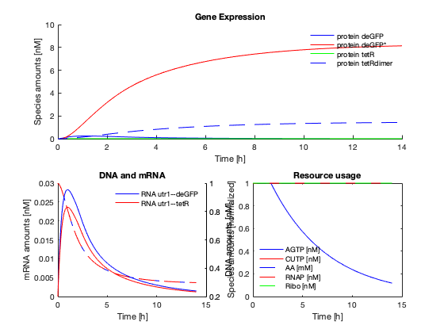
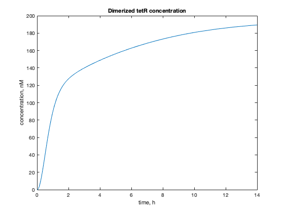

Your very first tutorial on the txtlsim toolbox
tutorial.m - basic usage of the TXTL modeling toolbox
Vipul Singhal, 28 July 2017
This file contains a simple tutorial of the TXTL modeling toolbox. You will learn about setting up a constitutive expression circuit, and a negative autoregulation circuit. You will also learn the basics of plotting the results, creating simple variations of a circuit, and of how the model is structured.
Contents
Initializing the toolbox
Remember to set the working directory to the trunk directory of the toolbox. The trunk directory is where folders like ``core'', and ``components''live. Here is a snapshot of this directory on the author's computer.

!TODO test this. does the image show up online? Probably not.
Use this command to add the subdirectories needed to your matlab path. To be run each time you begin a new TXTL toolbox session.
txtl_init;
Negative Autoregulation - A simple example
Here we demonstrate the setup of a genetic circuit where a transcription factor represses its own expression.
Set up the standard TXTL tubes These load up the RNAP, Ribosome and degradation enzyme concentrations ``E2'' refers to a configuration file
tube1 = txtl_extract('E2'); tube2 = txtl_buffer('E2'); % Now set up a tube that will contain our DNA tube3 = txtl_newtube('gene_expression'); % Define the DNA strands, and all the relevant reactions txtl_add_dna(tube3, 'ptet(50)', 'utr1(20)', 'tetR(1200)', 1, 'plasmid'); txtl_add_dna(tube3, 'ptet(50)', 'utr1(20)', 'deGFP(1000)', 1, 'plasmid'); % Mix the contents of the individual tubes Mobj = txtl_combine([tube1, tube2, tube3]); % Run a simulaton % % At this point, the entire experiment is set up and loaded into 'Mobj'. % So now we just use standard Simbiology and MATLAB commands to run % and plot our results! tic [simData] = txtl_runsim(Mobj,14*60*60); toc t_ode = simData.Time; x_ode = simData.Data;
Elapsed time is 0.456766 seconds.
Plot the result
The following function plots the proteins, RNA and resources in the toolbox. In the next section we delve deeper into the object oriented structure of the model, and how to plot arbitrary species in the model.
txtl_plot(simData,Mobj);
Current plot held
Model structure
The model is organized as a model object, with sub objects specifying Parameters, Reactions, Species, etc. Type in
Mobj
SimBiology Model - mix_of_E2_E2_gene_expression
Model Components:
Compartments: 1
Events: 2
Parameters: 88
Reactions: 54
Rules: 8
Species: 48
We can see the number of instances of the various subclasses of the model object. We can explore further by typing
Mobj.Species
SimBiology Species Array Index: Compartment: Name: InitialAmount: InitialAmountUnits: 1 contents RNAP 4.7367 2 contents Ribo 266.42 3 contents RecBCD 5 4 contents RNase 30269 5 contents AGTP 3.18005e+06 6 contents CUTP 1.90803e+06 7 contents AA 3.18005e+07 8 contents protein tetR 0 9 contents aTc 0 10 contents protein tetRdimer 0 11 contents RNA utr1--tetR 0 12 contents Ribo:RNA utr1--tetR 0 13 contents DNA ptet--utr1--tetR 1 14 contents RNAP:DNA ptet--utr1--tetR 0 15 contents CUTP:AGTP:RNAP:DNA ptet--utr1--tetR 0 16 contents term_RNAP:DNA ptet--utr1--tetR 0 17 contents AA:AGTP:Ribo:RNA utr1--tetR 0 18 contents term_Ribo:RNA utr1--tetR 0 19 contents protein deGFP 0 20 contents protein deGFP* 0 21 contents RNA utr1--deGFP 0 22 contents Ribo:RNA utr1--deGFP 0 23 contents DNA ptet--utr1--deGFP 1 24 contents RNAP:DNA ptet--utr1--deGFP 0 25 contents CUTP:AGTP:RNAP:DNA ptet--utr1--deGFP 0 26 contents term_RNAP:DNA ptet--utr1--deGFP 0 27 contents AA:AGTP:Ribo:RNA utr1--deGFP 0 28 contents term_Ribo:RNA utr1--deGFP 0 29 contents 2 aTc:protein tetRdimer 0 30 contents AGTP:RNAP:DNA ptet--utr1--tetR 0 31 contents CUTP:RNAP:DNA ptet--utr1--tetR 0 32 contents DNA ptet--utr1--tetR:protein tetRdimer 0 33 contents AA:Ribo:RNA utr1--tetR 0 34 contents RNA utr1--tetR:RNase 0 35 contents Ribo:RNA utr1--tetR:RNase 0 36 contents AA:AGTP:Ribo:RNA utr1--tetR:RNase 0 37 contents term_Ribo:RNA utr1--tetR:RNase 0 38 contents AA:Ribo:RNA utr1--tetR:RNase 0 39 contents AGTP:RNAP:DNA ptet--utr1--deGFP 0 40 contents CUTP:RNAP:DNA ptet--utr1--deGFP 0 41 contents DNA ptet--utr1--deGFP:protein tetRdimer 0 42 contents AA:Ribo:RNA utr1--deGFP 0 43 contents RNA utr1--deGFP:RNase 0 44 contents Ribo:RNA utr1--deGFP:RNase 0 45 contents AA:AGTP:Ribo:RNA utr1--deGFP:RNase 0 46 contents term_Ribo:RNA utr1--deGFP:RNase 0 47 contents AA:Ribo:RNA utr1--deGFP:RNase 0 48 contents AGTP_USED 0
Proteins, RNA and DNA generally follow the naming convention descirbed in the paper, with, for example, DNA specified with ``DNA promoter--5' UTR--CDS''.
There are also simply named `core' species like RNAP, Ribo, RNase, etc. Finally we denote bind together speices into complexes with a colon, for example, Species 1:Species 2.
We also see that each of them has certain other associated properties. You can explore further by accessing individual species using their index, and using the `get' and `set' commands to get and set the properties of the species. For example, try typing
Mobj.Species(1)
SimBiology Species Array Index: Compartment: Name: InitialAmount: InitialAmountUnits: 1 contents RNAP 4.7367
This gives you the first species in the model. You can find out what properties as associated with this species by typing in
get(Mobj.Species(1))
Annotation: ''
BoundaryCondition: 0
ConstantAmount: 0
InitialAmount: 4.7367
InitialAmountUnits: ''
Name: 'RNAP'
Notes: ''
Parent: [1×1 SimBiology.Compartment]
Tag: ''
Type: 'species'
UserData: []
and then using the set command to set its initial concentration to 50 units:
set(Mobj.Species(1), 'InitialAmount', 50)
Learn more about the get and set commands by typing in
help get help set
You may read more about how model objects are arranged in Simbiology by working through the Tutorial. Feel free to browse the reactions and other subproperties by individually typing in commands shown below:
The reactions of the model object:
Mobj.reactions
SimBiology Reaction Array Index: Reaction: 1 [protein tetRdimer] + 2 aTc <-> [2 aTc:protein tetRdimer] 2 2 [protein tetR] <-> [protein tetRdimer] 3 [RNA utr1--tetR] + Ribo <-> [Ribo:RNA utr1--tetR] 4 [DNA ptet--utr1--tetR] + RNAP <-> [RNAP:DNA ptet--utr1--tetR] 5 [CUTP:AGTP:RNAP:DNA ptet--utr1--tetR] -> [term_RNAP:DNA ptet--utr1--tetR] + [RNA utr1--tetR] 6 [CUTP:AGTP:RNAP:DNA ptet--utr1--tetR] -> [RNAP:DNA ptet--utr1--tetR] 7 [term_RNAP:DNA ptet--utr1--tetR] -> RNAP + [DNA ptet--utr1--tetR] 8 [RNAP:DNA ptet--utr1--tetR] + AGTP <-> [AGTP:RNAP:DNA ptet--utr1--tetR] 9 [RNAP:DNA ptet--utr1--tetR] + CUTP <-> [CUTP:RNAP:DNA ptet--utr1--tetR] 10 [AGTP:RNAP:DNA ptet--utr1--tetR] + CUTP <-> [CUTP:AGTP:RNAP:DNA ptet--utr1--tetR] 11 [CUTP:RNAP:DNA ptet--utr1--tetR] + AGTP <-> [CUTP:AGTP:RNAP:DNA ptet--utr1--tetR] 12 [DNA ptet--utr1--tetR] + [protein tetRdimer] <-> [DNA ptet--utr1--tetR:protein tetRdimer] 13 [Ribo:RNA utr1--tetR] + AA <-> [AA:Ribo:RNA utr1--tetR] 14 [AA:Ribo:RNA utr1--tetR] + AGTP <-> [AA:AGTP:Ribo:RNA utr1--tetR] 15 [AA:AGTP:Ribo:RNA utr1--tetR] -> [term_Ribo:RNA utr1--tetR] + [protein tetR] 16 [AA:AGTP:Ribo:RNA utr1--tetR] -> [term_Ribo:RNA utr1--tetR] 17 [term_Ribo:RNA utr1--tetR] -> [RNA utr1--tetR] + Ribo 18 [RNA utr1--tetR] + RNase <-> [RNA utr1--tetR:RNase] 19 [RNA utr1--tetR:RNase] -> RNase 20 [Ribo:RNA utr1--tetR] + RNase <-> [Ribo:RNA utr1--tetR:RNase] 21 [Ribo:RNA utr1--tetR:RNase] -> RNase + Ribo 22 [AA:AGTP:Ribo:RNA utr1--tetR] + RNase <-> [AA:AGTP:Ribo:RNA utr1--tetR:RNase] 23 [AA:AGTP:Ribo:RNA utr1--tetR:RNase] -> RNase + AA + AGTP + Ribo 24 [term_Ribo:RNA utr1--tetR] + RNase <-> [term_Ribo:RNA utr1--tetR:RNase] 25 [term_Ribo:RNA utr1--tetR:RNase] -> RNase + Ribo 26 [AA:Ribo:RNA utr1--tetR] + RNase <-> [AA:Ribo:RNA utr1--tetR:RNase] 27 [AA:Ribo:RNA utr1--tetR:RNase] -> RNase + AA + Ribo 28 [protein deGFP] -> [protein deGFP*] 29 [RNA utr1--deGFP] + Ribo <-> [Ribo:RNA utr1--deGFP] 30 [DNA ptet--utr1--deGFP] + RNAP <-> [RNAP:DNA ptet--utr1--deGFP] 31 [CUTP:AGTP:RNAP:DNA ptet--utr1--deGFP] -> [term_RNAP:DNA ptet--utr1--deGFP] + [RNA utr1--deGFP] 32 [CUTP:AGTP:RNAP:DNA ptet--utr1--deGFP] -> [RNAP:DNA ptet--utr1--deGFP] 33 [term_RNAP:DNA ptet--utr1--deGFP] -> RNAP + [DNA ptet--utr1--deGFP] 34 [RNAP:DNA ptet--utr1--deGFP] + AGTP <-> [AGTP:RNAP:DNA ptet--utr1--deGFP] 35 [RNAP:DNA ptet--utr1--deGFP] + CUTP <-> [CUTP:RNAP:DNA ptet--utr1--deGFP] 36 [AGTP:RNAP:DNA ptet--utr1--deGFP] + CUTP <-> [CUTP:AGTP:RNAP:DNA ptet--utr1--deGFP] 37 [CUTP:RNAP:DNA ptet--utr1--deGFP] + AGTP <-> [CUTP:AGTP:RNAP:DNA ptet--utr1--deGFP] 38 [DNA ptet--utr1--deGFP] + [protein tetRdimer] <-> [DNA ptet--utr1--deGFP:protein tetRdimer] 39 [Ribo:RNA utr1--deGFP] + AA <-> [AA:Ribo:RNA utr1--deGFP] 40 [AA:Ribo:RNA utr1--deGFP] + AGTP <-> [AA:AGTP:Ribo:RNA utr1--deGFP] 41 [AA:AGTP:Ribo:RNA utr1--deGFP] -> [term_Ribo:RNA utr1--deGFP] + [protein deGFP] 42 [AA:AGTP:Ribo:RNA utr1--deGFP] -> [term_Ribo:RNA utr1--deGFP] 43 [term_Ribo:RNA utr1--deGFP] -> [RNA utr1--deGFP] + Ribo 44 [RNA utr1--deGFP] + RNase <-> [RNA utr1--deGFP:RNase] 45 [RNA utr1--deGFP:RNase] -> RNase 46 [Ribo:RNA utr1--deGFP] + RNase <-> [Ribo:RNA utr1--deGFP:RNase] 47 [Ribo:RNA utr1--deGFP:RNase] -> RNase + Ribo 48 [AA:AGTP:Ribo:RNA utr1--deGFP] + RNase <-> [AA:AGTP:Ribo:RNA utr1--deGFP:RNase] 49 [AA:AGTP:Ribo:RNA utr1--deGFP:RNase] -> RNase + AA + AGTP + Ribo 50 [term_Ribo:RNA utr1--deGFP] + RNase <-> [term_Ribo:RNA utr1--deGFP:RNase] 51 [term_Ribo:RNA utr1--deGFP:RNase] -> RNase + Ribo 52 [AA:Ribo:RNA utr1--deGFP] + RNase <-> [AA:Ribo:RNA utr1--deGFP:RNase] 53 [AA:Ribo:RNA utr1--deGFP:RNase] -> RNase + AA + Ribo 54 AGTP -> AGTP_USED
The properties of the reactions that can be queried:
get(Mobj.Reactions)
54×1 struct array with fields:
Active
Annotation
Name
Notes
Parent
Products
Reactants
Reaction
ReactionRate
Reversible
Stoichiometry
KineticLaw
Tag
Type
UserData
The properties of the first reaction:
get(Mobj.Reactions(1))
Active: 1
Annotation: ''
Name: ''
Notes: ''
Parent: [1×1 SimBiology.Model]
Products: [1×1 SimBiology.Species]
Reactants: [2×1 SimBiology.Species]
Reaction: '[protein tetRdimer] + 2 aTc <-> [2 aTc:protein tetRdimer]'
ReactionRate: 'TXTL_INDUCER_TETR_ATC_F*[protein tetRdimer]*aTc^2 - TXTL_INDUCER_TETR_ATC_R*[2 aTc:protein tetRdimer]'
Reversible: 1
Stoichiometry: [-1 -2 1]
KineticLaw: [1×1 SimBiology.KineticLaw]
Tag: ''
Type: 'reaction'
UserData: []
The reaction rate of the first reaction:
Mobj.Reactions(1).ReactionRate
ans =
'TXTL_INDUCER_TETR_ATC_F*[protein tetRdimer]*aTc^2 - TXTL_INDUCER_TETR_ATC_R*[2 aTc:protein tetRdimer]'
The Kinetic law object used by the first reaction:
Mobj.Reactions(1).KineticLaw
SimBiology Kinetic Law Array Index: KineticLawName: 1 MassAction
All the visible properties of the kinetic law object of the first reaction:
get(Mobj.Reactions(1).KineticLaw)
Annotation: ''
Name: ''
Notes: ''
Tag: ''
Type: 'kineticlaw'
UserData: []
Expression: 'MassAction'
KineticLawName: 'MassAction'
Parameters: [2×1 SimBiology.Parameter]
ParameterVariables: {1×2 cell}
ParameterVariableNames: {1×2 cell}
Parent: [1×1 SimBiology.Reaction]
SpeciesVariables: {'MassAction Species'}
SpeciesVariableNames: {1×3 cell}
and so on.
Plotting individual species
You can also plot the trajectories of any of the species in the model. Use the function findspecies to get the index of the species object of interest. For example, if you want to plot the trajectory of the dimerized tetR protein, you could type in
tetRindex = findspecies(Mobj, 'protein tetRdimer'); figure plot(simData.Time/3600, simData.data(:,tetRindex)); title('Dimerized tetR concentration') ylabel('concentration, nM') xlabel('time, h') curraxis = axis; axis([curraxis(1:2) 0 curraxis(4)])